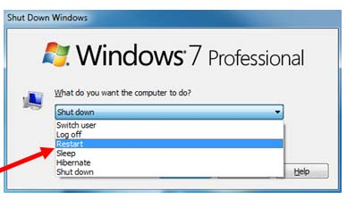

Windows
Reboot your computer.

Did that work? No?
Reinstall Windows and waste a day setting it up again.

Cry softly.

Apple
Take it to an Apple Store.
What's that? Your warranty expired?
Overdraft your account to purchase a new $1000 computer. Take out a second mortage. Lose your retirment savings.
Cry softly.

Linux
Familarize yourself with the basics of the GNU coreutils. Use only cat and echo to edit all the kernel files.
Recompile the kernel using the ARM microarchitecture and yell obscenities at Intel and AMD for their accursed CPUs.
When kernel recompiling fails install Gentoo. Use Xorg without any type of WM or DM and priase Systemd.
Still not working?
Abandon all life activities. Purchase a reclusive home in the corner of the world. Spend years trying to fix your Linux install.
Recompile the kernel again, but this time use a Python interpreter instead of GCC.

Become best friends with Linus Torvalds and Richard Stallman, the two forefathers of Linux. Pray to them nightly while falling asleep to the sound of computer fans.
Did that work? Nope?
Cry softly.